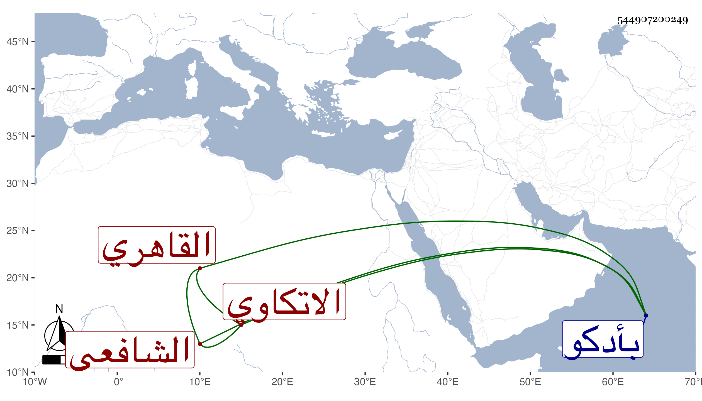

0902Sakhawi.DawLamic.ITO20230111-ara1.EIS1600.544907200249
Biography ID: 544907200249
إبراهيم بن عمر بن محمد بن زيادة البرهان الاتكاوي القاهري الشافعي أحد السادات من العارفين حفظ القرآن ومختصر أبي شجاع وعرضه بتمامه على القاضي داود السري ويقال أن كتابه أيضا الحاوي وكأنه حفظه بعد وأخذ عن التقي عبد الرحمن الشبريسي صاحب الشيخ يوسف العجمي وما تيسر له الحج ظاهرا وأخذ عنه الشمس الغراقي والأبناسي والقاياتي والونائي والمناوي والجمال الأمشاطي والشهاب السكندري المقري والشهاب الطوخي خادم الجمالية والوروري والعلاء القلقشندي والشمس العاصفي والزين عبد الدائم الأزهري المقري وإمام الكاملية والعبادي وخلق من أئمة الشافعية ومنهم من أهل بلده رمضان وسلامة ومن الحنفية العلاء البخاري وابن الهمام وأفضل الدين ومن الحنابلة العز الكناني في جماعة كثيرين منهم الشيخ محمد الفوي والنور أخو حذيفة وثنا الكثير منهم بالكرامات والأحوال الغائقة فمن ذلك كون العلاء البخاري تعقبت به تابعة من الجان عجز الأكابر عن خلاصه منها حتى كان على يديه وأنه تزايد انقياده معه لذلك بحيث انه جاء إليه وهو يقرئ وبين يديه الأمثل من كل مذهب فقام إليه وأجلسه مكانه فلم يحسن ذلك بخاطر بعضهم فقال يا سيدي من يقرئنا الدرس أو نحو هذا كالمستهزئ فما جلس العلاء يكلمه بهذا فبادر هو وأمر القارئ بالقراءة وأخذ في التقرير بما أبهر كل من حضر وخضعوا له وطأطؤا رؤسهم سيما وقد قال الشيخ والله ما كنت أعلم شيئا مما قلته فصور لي في اللوح المحفوظ أو كما قال بل أنشدني عند الكمال إمام الكاملية لنفسه :
| صبوت وما زال الغرام مسامري | إلى أن محاني الشوق عن كل زائر |
| بذكر الذي أفنى خيالي بحبه | أغيب عن الأحوال غيبة حاضر |
| وعاش فؤادي بالحبيب وها أنا | أقول وبالمحبوب ترجم سائري |
| فخاص كمال السر آلف نوره | لنور شموس الصحو ألفة قادر |
| وجامع جمع الجمع أدهش نوره | وفلق فرق الصبح ينصر ناصري |
| وعفوك يا مولاي زاد به الهنا | ومنك دنا نور حوى كل ناظري |
وقال لي الكمال أنه كان يحذره من مطالعة كتب ابن عربي وينفره عنها وحكى لي صاحبنا الشمس بن سلامة أنه رآه في المنام وأنشده أبياتا كأنها لنفسه فاستيقظ وهو يذكر منها بيتا واحدا وحكى ذلك للشيخ رمضان الآتي فقال له قد كنت ... معك وحفظتها ثم أنشده إياها وهي :
| يا مالك الملك كن لي | وذكرك اجعله شغلي |
| وهب لي قلبا سليما | وأحيه بالتجلي |
| وأن أكون دواما | مشاهدا لك كلي |
| من غير أين وكيف | وغير شبه ومثل |
| سألتك الله ربي | تمنن علي بسؤلي |
ورأيت بخطه قائمة فيها أسماء من أذن له وأجازه . مات في ربيع الأول سنة أربع وثلاثين ودفن بزاويته التي أنشأها له صهره وأحد أصحابه أبو يوسف أحمد بن علي بن موسى الآتي بأدكو من طرفها الغربي وما رأيت شيخنا ولا المقريزي ولا غيرهما ممن وقفت عليه ذكروه مع جلالته ورأيت من يسمى جده زيادة والله أعلم .
